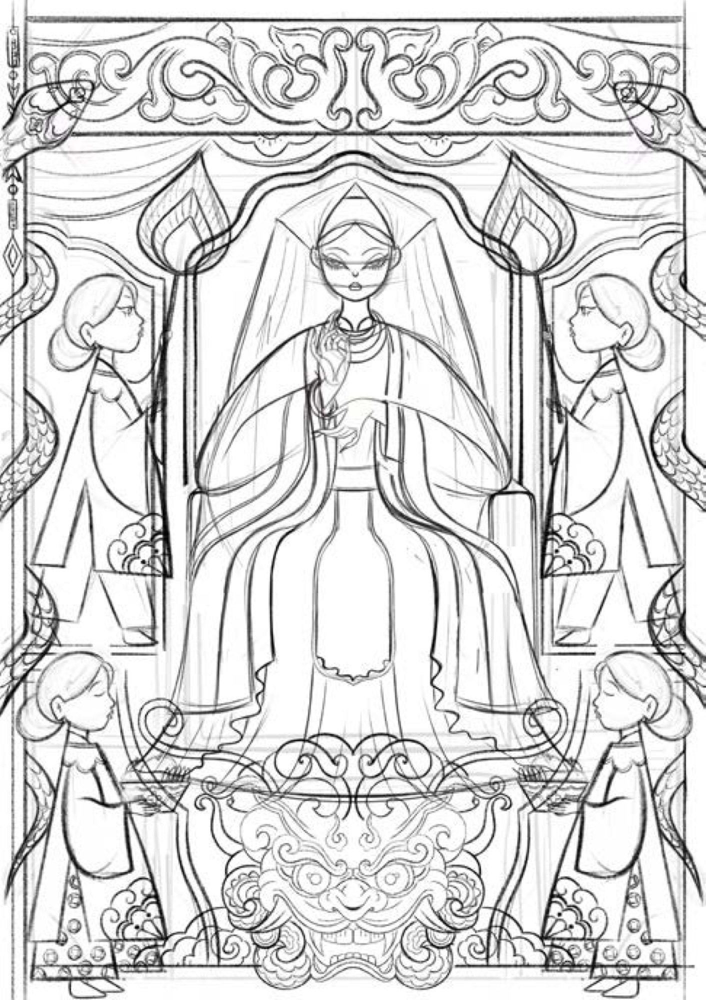
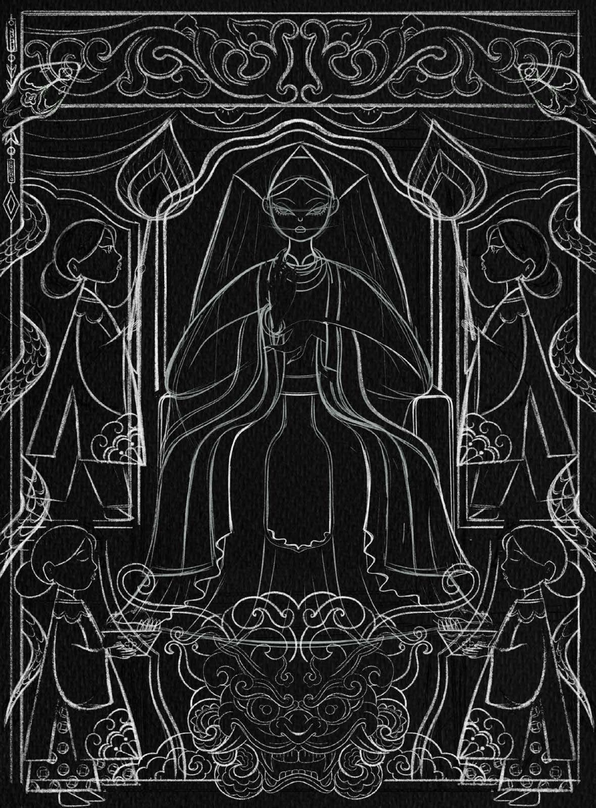

PHAM Nhu Quynh
Contact
PHAM Nhu Quynh
Contact

COMIS
Mother
Goddess
WorshipCulte des
Déesses-
MèresStRIP
Brief
Create an illustrated poster that tells a small story in a single image, such as a trip, a sports match, or a meal, conveying both the event and its emotions visually.
Créer une affiche illustrée qui raconte une petite histoire en une seule image — un voyage, un match, un repas — en traduisant visuellement l’événement comme les émotions qu’il suscite.
About
Mother Goddess WorshipÀ propos du
culte des Déesses-Mères
Đạo Mẫu is a Vietnamese indigenous belief system that honors female deities, focusing on the veneration of the Mother Goddesses of the Three or Four Realms (Heaven, Earth, Water, and Mountains/Forests). It blends elements of Buddhism, Taoism, and local folk traditions.
Le Đạo Mẫu est une croyance indigène vietnamienne qui honore des divinités féminines, en particulier les Déesses-Mères des Trois ou Quatre Mondes (le Ciel, la Terre, l’Eau, les Montagnes et Forêts). Il mêle bouddhisme, taoïsme et traditions populaires locales.
Even long before its UNESCO recognition as intangible cultural heritage, Đạo Mẫu has always been considered a unique part of Vietnamese culture.
Bien avant son inscription au patrimoine culturel immatériel de l’UNESCO, le Đạo Mẫu a toujours été considéré comme une part singulière de la culture vietnamienne.

Creative IntentionIntention créative
The idea is Đạo Mẫu (Mother Goddess Worship) through a fusion of tradition and pop-style modernity. Inspired by the Hầu Đồng ritual, the illustration captures a spirit medium mid-transformation—surrounded by worshippers, vibrant costumes, and divine energy. The symmetrical layout, bold colors, and spiritual symbolism reflect Vietnam’s indigenous mysticism while presenting it through a fresh, contemporary lens.
L’idée : aborder le Đạo Mẫu (culte des Déesses-Mères) en fusionnant tradition et modernité pop. Inspirée du rituel Hầu Đồng, l’illustration saisit une médium en pleine transformation, entourée de fidèles, de costumes éclatants et d’une énergie divine. La composition symétrique, les couleurs vives et la symbolique spirituelle traduisent le mysticisme indigène du Vietnam avec un regard neuf et contemporain.

“Tradition helps you understand who you are. It’s beneficial for the next generation to understand tradition in order to develop.”
« La tradition aide à comprendre qui l’on est. Pour se construire, la nouvelle génération a tout à gagner à connaître la tradition. »
— Phạm Ngọc Thái Linh, artist— Phạm Ngọc Thái Linh, artiste